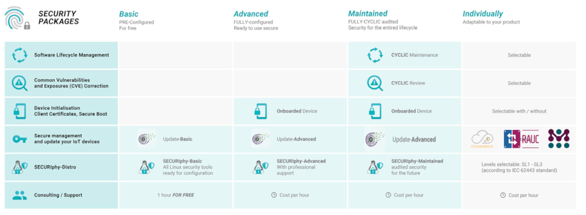
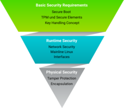
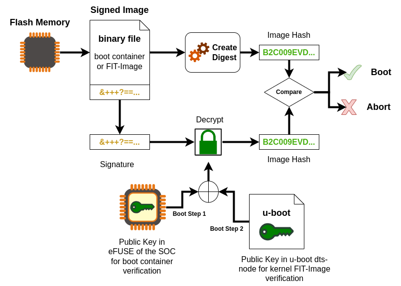
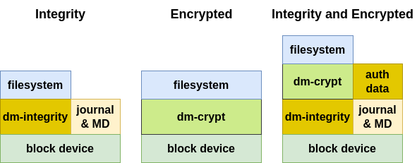
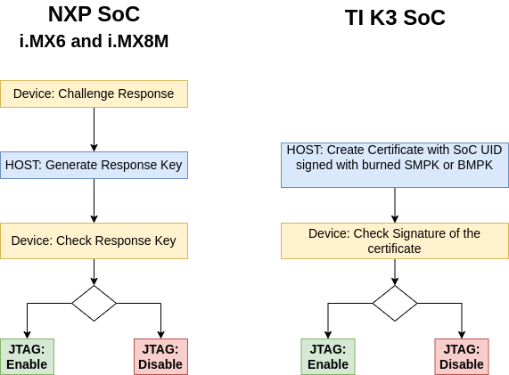
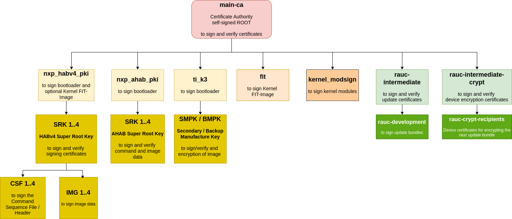

PHYTEC's Yocto distribution Securiphy (former Ampliphy-secure) supports
different security mechanism. The security features have impact on the
bootloader, the Linux kernel, Device Tree, and root filesystem. This manual
describes how security features are used and implemented on various PHYTEC
platforms. Note that different modules use different bootloaders and flash
storage devices, which affects the way things are handled. Make sure to
read the correct sections fitting your platform.
备注
This manual contains machine-specific paths and variable contents. Make sure
you are using the correct machine and device names for your application when
executing any commands.
SECURIphy is the PHYTEC secure linux distribution and a part of the security
packages phyKNOX.

With increasing digitization and networking, the protection of embedded systems
against unauthorized access and targeted attacks is more important than ever.
Guaranteeing this type of security, along with functional security, is a major
challenge in electronics design.
PHYTEC supports you in minimizing risks by considering security requirements
during the development of our hardware and board support packages. On top of
these deployment-ready solutions, we support you with individual project
consulting on complex security principles.
Security is a process encompassing all parts of a device and all development
phases of its lifetime.
As of the writing of this manual, recommendations apply to key lengths,
certificates, and hash values. These recommendations come from BSI (Bundesamt
für Sicherheit in der Informationstechnik) and NIST (National Institute of
Standards and Technology).
In the technical and connected world, it is important to build a "security by
design” approach that thwarts intrusion into your product, data, and
intellectual property at multiple levels.

Here are the Security features from the Standard BSP.
Basic Security
Basic Security is the fundament of the security measures implementations and
includes support for basic modules such as:
True Number Generator and Cryptographic support
Secure Boot
Secure Key Storage and Usage
Secure Storage
Secure Updates
Parts from Access Control
Access Control regulates the access of users and services to the device and
components in the device according to the least privilege access principle.
Secure Console
Secure Shell
User and Role Management
Provisioning
Provisioning includes the activation of hardware security features like
Secure Boot and the generation of specific keys and X509 certificates on the
device in secure manufacturing like the PHYTEC secure production area.
More Additional Security Features (not part of this BSP)
Network Security
Network Security enables secure connections to connected devices or servers
via Ethernet, WLAN, and LTE, but also secures access to the device from
outside.
Remote Access
Server, Cloud Integration Tools
Intrusion Protection
Firewall
Container
Interface Security
Interface Security secures the interfaces against third-party access and
enables the secure connection of intended devices.
USB
Field Bus
Hardening
Hardening refers to the reduction of software components and kernel
configuration to a necessary minimum.
Physical Security
Physical Security secures the device from direct physical access to protect
the corresponding application and data from external access.
Distro securiphy, securiphy-vendor, securiphy-provisioning and
securiphy-vendor-provisioning are sample Yocto distros like
ampliphy with additional security pre-configurations.
Additional security measurements for production usage are necessary and
depend on your threat model.
The distro securiphy or securiphy-vendor with the
phytec-securiphy-image is an example of a production image with secure-update
support.
The phytec-securiphy-image.rootfs.wic or phytec-securiphy-image.rootfs.partup
can boot only from an eMMC!
For devices based on the TI K3 controller (AM6 series) the MACHINE variable
in the $BUILDDIR/conf/local.conf needs be set to HS-SE machine variant.
3.2. Distro securiphy-provisioning and securiphy-vendor-provisioning
The distro securiphy-provisioning or securiphy-vendor-provisioning with the
phytec-provisioning-image is for the production or the first initialization
of your device based on a NXP controller in a secure area.
The phytec-provisioning-image.rootfs can boot directly from an SD card to a
Kernel with a minimal initramfs to
install the phytec-securiphy-image.rootfs as wic or partup to the eMMC
initialize the secure key storage on the device
initialize the secure storage on the device
For devices based on the TI K3 controller (AM6 series) it is sufficient to build
the phytec-headless-image to boot from SD card. The MACHINE variable in the
$BUILDDIR/conf/local.conf needs to be set to the HS-SE machine variant.
The HS-SE machine variant is the machine with secure boot enabled, so it will be
built with signed bootloaders.
For the TI K3 controller, different machines exist for
General Purpose (GP): The device is not capable of secure operation
High Secure - Field Securable (HS-FS): is the state of a K3 device before
it has been eFused with customer security keys.
High Secure - Security Enforced (HS-SE): devices enforce an authenticated
boot flow for secure boot.
Board
HS-FS device
HS-SE device
phyCORE-AM62Ax
phyboard-lyra-am62axx-2
phyCORE-AM62x
phyboard-lyra-am62xx-3
phyboard-lyra-am62xx-4
phyCORE-AM64x
phyboard-electra-am64xx-2
phyboard-electra-am64xx-3
phyCORE-AM68x
phyboard-izar-am68x-3
phyboard-izar-am68x-4
For NXP-controller-based boards, no different machines exist for devices with
activated and not activated secure boot, because signed images can be booted
independent of the device state.
Secure boot is used to ensure that only trustworthy, signed software can be
executed on the controller. This is the first stage of the Chain-of-Trust.
With the Chain-of-Trust, signed programs are always started by other previously
verified programs. This ensures that even the end application is at the
highest layer of trustworthiness.
The boot process differs between the different vendors of SoCs and even between
SoCs of the same vendor. The main boot process is the following

The Trusted ROM-bootloader, which is part of the SoC, verifies the boot
container (U-boot spl, ATF, firmware, op-tee) with the internal unit
(Boot Step 1)
SoC
Unit
Boot mode
NXP i.MX6, i.MX6UL, NXP i.MX8M Mini/Plus
NXP HABV4
Single: Cortex-A
NXP i.MX93, i.MX91, i.MX95
NXP AHAB
+ EdgeLock secure
enclave
LPboot: M33
Single: A35 -> M33
DUAL: M33 + A35
TI AM62x, AM64x, AM68x
R5
u-boot SPL loads u-boot proper from the FIT-image and ATF
(ARM Trusted Firmware) and optionally OP-TEE.
Then, u-boot loads and verifies the FIT-image containing a Linux kernel,
DTB, and ramdisk. (Boot Step 2)
If built with signed kernel modules (standard), Linux will only load kernel
modules verified with a kernel compiled-in public key
If you use the DISTRO_FEATURE secureboot or a TI HS-SE machine variant, then
the bootloader is configured additionally:
The bootloader is signed and is used in the images (wic, partup and bmap).
The bootloader boots only signed kernel fitImage after a verification.
The bootloader uses only the built-in environment and only loads some
necessary variables for RAUC update mechanism.
FIT-images are used with Secure Boot as standard format for packing kernel,
device-tree and optional initramfs. The FIT-image are signed in the Yocto build
with a Private Key. The public key is on the target, compiled in the bootloader
or the NXP HAB keys are used. Documentation about FIT is available in
the Flattened Image Tree project.
There are two different Yocto classes for creation of a signed FIT-image.
With FIT-image recipes you can define custom, more refined FIT-images.
Example for FIT-image recipes are in sources/meta-ampliphy/recipes-images/fitimage/
To create custom FIT-image, you need to specify some variables in the
recipe:
FITIMAGE_SLOTS: Use this to list all slot classes for which the
FIT-image should contain images. A value of "kernel fdt fdtapply",
for example, will create a manifest with images for two slot classes -
kernel and devicetree.
FITIMAGE_SLOT_<slotclass>: For each slot class, set this to the image
(recipe) name which builds the artifact you intend to place in the slot
class.
FITIMAGE_SLOT_<slotclass>[type]: For each slot class, set this to the
type of image you intend to place in this slot. Possible types are the
kernel, fdt, fdto, fdtapply, or ramdisk.
FITIMAGE_SLOT_<slotclass>[file]: For slot type kernel, fdt, fdt0 and
fdtapply set this to the file of the image you intend to place in this
slot.
FITIMAGE_SLOT_<slotclass>[fstype]: For slot type ramdisk, set this to
the filesystem type of image you intend to place in this slot.
FITIMAGE_SLOT_<slotclass>[name]: For slot type fdtapply, set this to
the final device tree and configuration name.
This is the standard upstream FIT-image class in Yocto mainly for u-boot,
which builts one FIT-image with initramfs and without initramfs.
Initially, the PHYTEC FIT-image class was used to create the FIT-images, because
it supports barebox and u-boot and you can define more refined FIT-images.
Since security has increasingly become an integral part of the SoC
manufacturer's BSPs, which use the kernel-fitimage, PHYTEC has decided to
gradually switch to this class, too.
All variables to adjust the bootloader and kernel fitImage signing process can
be found in the source/meta-ampliphy/secureboot.bbclass
First of all, the necessary variables for signing the bootloader for the
different SoC types need to be defined. The variable BOOTLOADER_SIGN is
obsolete, because the DISTRO_FEATURES="secureboot" includes the bootloader
signing.
BOOTLOADER_SIGN??="true"
BOOTLOADER_SIGN[type]="boolean"
CERT_PATH??="${OEROOT}/../../phytec-dev-ca"# for NXP HABv4 based systems
BOOTLOADER_SIGN_IMG_PATH??="${CERT_PATH}/nxp_habv4_pki/crts/IMG1_1_sha256_4096_65537_v3_usr_crt.pem"
BOOTLOADER_SIGN_CSF_PATH??="${CERT_PATH}/nxp_habv4_pki/crts/CSF1_1_sha256_4096_65537_v3_usr_crt.pem"
BOOTLOADER_SIGN_SRKFUSE_PATH??="${CERT_PATH}/nxp_habv4_pki/crts/SRK_1_2_3_4_table.bin"
BOOTLOADER_HABV4_SRK_INDEX??="0"# AHAB
AHAB_SRK_TABLE_BIN?="${CERT_PATH}/nxp_ahab_pki/crts/SRK_1_2_3_4_table.bin"
AHAB_SRK_PUB_CERT?="${CERT_PATH}/nxp_ahab_pki/crts/SRK1_sha512_secp521r1_v3_usr_crt.pem"
AHAB_SRK_INDEX?="0"# for TI K3
BOOTLOADER_TI_K3_MPK_KEY??="${CERT_PATH}/ti_k3/keys/phytecSMPK.pem"
BOOTLOADER_TI_K3_DEGENERATE_KEY??="${CERT_PATH}/ti_k3/keys/ti-degenerate-key.pem"
In the following view you can see the necessary variables for signing with the
PHYTEC FIT-image class. The FITIMAGE_PUBKEY_SIGNATURE_PATH is only important,
when using the FITIMAGE_SIGN_ENGINE="software". This means, that the u-boot
validates the kernel fitImage und uses the compiled-in public key.
The alternative is that the NXP HAB unit validates the kernel fitImage, then
the FITIMAGE_SIGN_ENGINE="nxphab" must be set. This is only possible for
NXP SoCs with HAB unit and u-boot as bootloader.
The following configuration is part of in the sources/meta-ampliphy/secureboot.bbclass
The signing with the poky kernel-fitimage class needs the following
configuration in
machine configuration in sources/meta-phytec/conf/machine for the kernel,
initrd, device-tree and device-tree overlay LOADADDRESS and
ENTRYPOINT addresses
source/meta-ampliphy/secureboot.bbclass for the signing key parameter
To build a signed provisioning image for the configuration of the device
which can boot from SD card or Serial Downloader, the DISTRO needs to
be set to securiphy-vendor-provisioning or securiphy-provisioning.
The main parts for the provisioning-image are the bootloader and the FIT-image,
which includes an initramfs with all necessary tools.
To build the phytec-securiphy-image for the eMMC or ubifs with RAUC update support,
then the DISTRO needs to be set to securiphy-vendor or
securiphy.
# forallSoC
host:~$ bitbakephytec-securiphy-image
备注
If you have some boot warnings or errors like "/initrd.image: incomplete
write" or the kernel boot fails, then please check the size for Contiguous
Memory Allocation (CMA; kernel boot parameter, setting in bootloader). The
allocated RAM for CMA can be too much, which is important for systems with
256 MiB or 512 MiB RAM.
The final step to activate Secure Boot on your device is to burn the secure
eFuse configuration.
警告
The secure eFuse configuration can only be written once and is irreversible!
For Secure Boot only public information is burned to SoCs from NXP and TI. When
building the securiphy or securiphy-vendor distro for the first
time, the bootloader image is signed with PHYTEC's development keys. Yocto
stores these development keys to yocto/phytec-dev-ca
备注
Create and use your own keys and certificates for signing your images.
Burn the right key into the Controller eFuse.
Please refer to the chapter Secure Key Storage
If you install your eMMC with the partup image, then the eMMC is configured
with the right configuration.
If you install the bootloader standalone on the eMMC, then please check the
eMMC configuration for the
right partition.
For NXP SoCs you can burn the fuses with u-boot or with the tool crucible in
the kernel userspace.
The necessary SRK fuses contain the hash value of the SRK public keys.
They are never used on open devices!
In closed devices, they are used to validate the public key contained in
signed firmware images.
Before closing the device, you must store the hash of the public keys in the
SRK OTP bits on the device.
This will allow the ROM loader to validate the public key included in signed
firmware images.
NXP i.MX with HAB: example SRK_1_2_3_4_fuse.bin file in yocto/phytec-dev-ca/nxp_habv4_pki/crts/SRK_1_2_3_4_fuse.bin
NXP i.MX with AHAB: example SRK_1_2_3_4_fuse.bin file in yocto/phytec-dev-ca/nxp_ahab_pki/crts/SRK_1_2_3_4_fuse.bin
If you build the signed bootloader, then the following tools are available in
the bootloader.
The fuses can only be burnt with the OTP-Keywriter, which can be built as
described in chapter Keys and Certificates Management. The public key is burnt in the SoC. Keys
may be overwritten, if the incremental approach is used. If the KEYREV value is
set to either 1 or 2, then the device is an HS-SE device with active Secure
Boot. After that, certificates cannot be written neither with the keywriter tool
nor otherwise anymore.
When UART boot mode is selected, boot ROM reports the SoC ID via UART, for
both GP and HS devices. Additionally, this can determine the device
configuration, which can be used to check if device was converted from HS-FS to
HS-SE after key programming.
Set the boot mode switches into UART boot mode.
AM62x: S5 & S6
AM64x: S3 & S4
AM68x: S8 & S7
Open your serial terminal on /dev/ttyUSB0
Power up your board
Copy the entire string up until "CCC" (ping characters) and paste the string
in <MCU_PLUS_SDK_INSTALL_DIR>/source/security/sbl_keywriter/tools/socid.txt
(For AM68x please download the otp_keywriter from AM62 to use this Python
script.)
Run in <MCU_PLUS_SDK_INSTALL_DIR>/source/security/sbl_keywriter/tools/
host:~$ pythonparse_uart_boot_socid.pysocid.txt
-----------------------SoC ID Public ROM Info:-----------------------SubBlockId :SubBlockSize :DeviceName : am62xDeviceType : HSFS
After successful activation of Secure Boot the DeviceType is HSSE
Additionally, you can see the SHA512 hash of the used keys in the output with
build profile DEBUG. This feature depends on the keywriter version.
Then you can compare it with the hash of your signing key:
host:~$ pythonparse_uart_boot_socid.pysocid.txt
...-----------------------SoC ID Secure ROM Info:-----------------------Sec SubBlockId : 2Sec SubBlockSize : 166Sec Prime : 0Sec Key Revision : 1Sec Key Count : 1Sec TI MPK Hash : d68ecb2c055dff11ade95bd927e837d2a53bc23b0a2800cebce4f106bcf309df2213912d77a157a8b7c2df40672a06a918034aa4c7d603e462481475225d49b8Sec Cust MPK Hash : 99adc5d401188641b1187d28b8e3f7bf94defcf48b503f6b45d6fe677da161a98a27956ecbc1c2f4af43867f56398bd147f54ce24b95f0725120d2b32ff2591fSec Unique ID : 2b8638ba724a82d7c6c0d1d19b56a13bd52da90bfcfa2efb6d6f8d26ed8830f5
To run the keywriter on your hardware we recommend starting with a regular
SD card that has an unsigned image on it.
Once you have your bootable SD card, copy the tiboot3.bin you generated
into the boot partition of the SD card, replacing the previous version of the
binary.
Alternatively you can use UART Boot or USBDFU, too.
For the TI AM62x
Now you must set JP8 on the development kit for AM62x in order to flash
the keys.
You do not need to set any external jumper to flash the keys because a GPIO on
phyCORE-AM68x is used to switch the additional voltage.
Once this configuration is set, plug the SD card into the kit and boot as you
normally would. You should see the output messages from the keywriting:
AM62x and AM64x on Standard Debug Port:
AM68x on MCU UART Port (Header X33) with Serial Converter
If you are using the incremental approach to programming your keys, it is
essential that you run your Key Revision binary after all the other binaries
have been successfully run. Writing the key revision is what converts the
device to a secure boot device, so you will not be able to run your other
binaries after the key revision is set.
After you have closed the device, consider the following points with
regard to how firmware authentication can potentially be skipped:
JTAG could be used to boot the processor and avoid the secure boot.
See Secure JTAG at Physical Security
The bootloader will drop to a console after an unsuccessful firmware
authentication for debugging purposes. That console can still be used to
boot, so it should be disabled in the production firmware.
please check the NXP and TI websites for more information
Although securing the device involves programming the hash of four public keys
into the eFuses, only one key (number 1 by default) is used in the secure boot
process. If the key gets compromised, it can be revoked and a different key
used.
To use a different key for the signature of bootloader images, change the
following variables in sources/meta-ampliphy/classes/secureboot.bbclass:
# for NXP with HABV4
BOOTLOADER_SIGN_IMG_PATH??="${CERT_PATH}/nxp_habv4_pki/crts/IMG1_1_sha256_4096_65537_v3_usr_crt.pem"
BOOTLOADER_SIGN_CSF_PATH??="${CERT_PATH}/nxp_habv4_pki/crts/CSF1_1_sha256_4096_65537_v3_usr_crt.pem"
BOOTLOADER_HABV4_SRK_INDEX??="0"# for NXP with AHAB
AHAB_SRK_TABLE_BIN?="${CERT_PATH}/nxp_ahab_pki/crts/SRK_1_2_3_4_table.bin"
AHAB_SRK_PUB_CERT?="${CERT_PATH}/nxp_ahab_pki/crts/SRK1_sha512_secp521r1_v3_usr_crt.pem"
AHAB_SRK_INDEX?="0"
The following keys are available:
key Slot
IMG Certificate
CSF Certificate
SRK_REVOLE[2:0]
0
IMG1_1_sha256_4096_*
CSF1_1_sha256_4096_*
001
1
IMG2_1_sha256_4096_*
CSF2_1_sha256_4096_*
010
2
IMG3_1_sha256_4096_*
CSF3_1_sha256_4096_*
100
3
IMG4_1_sha256_4096_*
CSF4_1_sha256_4096_*
not revocable
Example for Revoke Key Slot 0 on NXP SoC with HABV4
barebox
i.MX6, i.MX6UL
u-boot
i.MX8M series
barebox$mw-l-d/dev/imx-ocotp0xBC0x0001
u-boot=>fuseprog930x1
备注
The SRK Revocation does not modify the SRK hash values, only the
SRK_REVOKE fuse has to be programmed.
In a closed configuration, HAB, by default, sets the SRK_REVOKE_LOCK
sticky bit in the OCOTP controller to write protect this eFuse field.
To instruct HAB not to lock the SRK_REVOKE field, the CSF commands in
the bootloader need to be reconfigured.
When the kernel module signing facility
is enabled, Linux can enforce that only modules that have been signed with
a specific key can be loaded.
Keys with invalid signatures won't be allowed to load. This makes it harder
for attackers to load malicious or manipulated modules.
This is enforced by the kernel and does not require userland support.
To enable the kernel module signing facility, add the following DISTRO_FEATURES
to your configuration file in conf/distro/xyz.conf
DISTRO_FEATURES+="kernelmodsign"
警告
By default, the kernel modules will be signed with PHYTEC's public
development key. Unless you create your custom key, this feature does not
offer any protection.
Device Tree Overlays are device tree fragments that can be merged into a
Device Tree during boot time. These are for example hardware descriptions of
an expansion board. They are instead of being added to the device tree as an
extra include, now applied as an overlay. They also may only contain setting a
node's status depending on whether it is mounted or not.
The Device Tree Overlay support is generally deactivated and not supported
for i.MX6UL and i.MX6 with Secure Boot in the security distro and image
The new ADIN1300 Ethernet PHY is supported in the standard BSP as devicetree
overlay for the phyBOARD-Mira and phyBOARD-Nunki. In the security distro and
image, a new device tree is created with the FIT-image recipes in the
sources/meta-ampliphy/recipes-images/fitimages/ and the fdtapply
mechanism from the source/meta-phytec/classes/fitimage.bbclass. More
information can be found in FIT-image section in Secure Boot.
The barebox contains an Ethernet PHY detection, which boots the correct
configuration from the FIT-image.
The overlays variable can be either set directly in the U-Boot environment or
be a part of the external bootenv.txt environment.
警告
Manipulation Risk! The external bootenv.txt is not signed and protected
against manipulation, so overlays can be changed and deleted in the
bootenv.txt.
The overlays variable loaded from the external environment will always
overwrite the value from the environment saved directly in the flash.
By default, the overlays variable is not set directly in the U-Boot
environment but comes from the external bootenv.txt environment file.
It is also located in the boot partition of the SD card image.
备注
Please use Device Tree Overlay only in the development stage of your
product. Create a final Device Tree for your device for the production
phase.
To disable the Device Tree Overlay support set the following variable in
sources/meta-ampliphy/classes/secureboot.bbclass to true
FITIMAGE_NO_DTB_OVERLAYS?="true"
All the machine-defined Device Tree Overlays will be added to the FIT-image.
If you do not want Device Tree Overlays in the FIT-image,
please remove fdto in the sources/meta-ampliphy/recipes-image/fitimage/phytec-secureboot-ramdisk-fitimage.bb
or in your custom FIT-image recipe.
A fundamental aspect of security is integrity and confidentiality. Many
applications require an embedded device to keep sensitive data.
The standard solution to this problem is to use encryption to protect the data
and ensure that only authorized users have access to the encryption key.
When a user interacts directly with a system, the encryption key can be
protected with a password, pin code, or fingerprint that is provided by the
user. However, many embedded devices work without user interaction, so this is
not an option in those cases.
In the BSP, three different variants of Secure Key Storage can be implemented,
depending on hardware support. The available hardware support is activated
with MACHINE_FEATURE.
Type of
Secure Key Storage
Hardware Support
MACHINE_FEATURE
NXP CAAM
* all NXP i.MX6, i.MX6UL
* all i.MX8M series
caam
Trusted Execution
Environment TEE
* all NXP i.MX SoC
* all TI K3 SoC
optee
Trusted platform
Module TPM
* on base boards for i.MX8M series
* on phyGATE-Tauri-S / L
* on i.MX9 phyBOARD-Nash
tpm
Machines built with the MACHINE_FEATURE have all necessary prerequisites
enabled.
The NXP i.MX6, i.MX6UL and i.MX8M series processors include hardware encryption
through NXP's Cryptographic Accelerator and Assurance Module (CAAM, also known
as SEC4). The CAAM combines functions to create a modular and scalable
acceleration and assurance engine.
More information about the CAAM module can be found in the corresponding NXP
reference Manual:
i.MX Reference Manual
Secure Boot is required for trusted CAAM Key blob functionality. If Secure Boot
Keys are burned, the keys are locked. After a reset, the CAAM unit creates
internal keys for the signing and encryption CAAM blobs.
These keys are internal in the CAAM and can not be read out and overwritten.
OP-TEE is a Trusted Execution Environment (TEE) designed as a companion to a
non-secure Linux kernel running on Arm; Cortex-A cores using the TrustZone
technology.
OP-TEE is supported for the NXP i.MX8M series, NXP i.MX9 series and TI K3 SoC.
This allows users who are interested in utilizing
OP-TEE to use and test it on their
devices.
警告
If you want to use OP-TEE in production, then you must configure the
complete isolation between the normal and secure TrustZone world.
For more information
OP-TEE is divided into the following components:
OP-TEE kernel: The kernel acts as a secure world OS. This kernel is signed
by HABv4.
tee-supplicant: Helper daemon allowing OP-TEE to read/write from/to secure
storage. In practice, this means OP-TEE will save encrypted and authenticated
data in the filesystem.
Secure Boot is required for OP-TEE to prevent a malicious OP-TEE kernel from
loading.
It is furthermore required to allow the generation of a hardware unique key
that OP-TEE can use to derive a key for secure storage encryption and other
use cases.
Trusted Application Key-Pair: OP-TEE signs trusted applications
in order to ensure their authenticity and integrity. By default, OP-TEE uses a
pre-generated key, which you must replace with your own before using OP-TEE in
production.
optee_core denotes the secure world memory region. It is not accessible,
even to the Linux kernel. optee_shm is the shared region between the
normal and secure world, allowing normal-world client applications to
exchange data with OP-TEE-trusted applications.
Memory access policy enforcement can be tested using the "devmem2" utility.
target:~$ devmem20x56000000
Memory mapped at address 0xffff88e2c000.Bus errortarget:~$ $?
135target:~$ devmem20x57c00000
/dev/mem opened.Memory mapped at address 0xffffb4f3c000.Read at address 0x57C00000 (0xffffb4f3c000): 0xA0A28501
In this example the 0x5600000 address is the optee_core region. Access is
currently being blocked by the TZASC policy set up by OP-TEE, which causes
a "Bus error". The shared region, on the other hand, is accessible.
The Trusted Platform Module (TPM) is an international standard for a secure
cryptoprocessor, a dedicated microcontroller designed to secure hardware
through integrated cryptographic keys.
At first, the TPM 2.0 must be initialized with the command tss2_provision.
This command is used in the tool physecurekeystorage-install,
when choosing the trustedtpm key type.
Reason: For the check of the manufacture TPM certificate a internet
connection is necessary.
Please check:
your internet connection
or deactivate the certificate check with adding
"ek_cert_less":"yes" to /etc/tpm2-tss/fapi-config.json
ErrorCode (0x00060001) Failed to verify intermediate certificate / CRL is not yet valid
Please check if the date/clock is set correctly
ErrorCode (0x98E) authorization HMAC check failed
ERROR: Esys_DictionaryAttackLockReset(0x98E) - tpm:session(1):the authorization HMAC check failed and DA counter incremented
ERROR: Failed DictionaryLockout Reset
Reason: The TPM initialisation of the TPM with FAPI use HMAC with a
symmetric key. If the TPM configuration on the device is deleted or damaged,
then symmtric key for authtentication is lost.
To Reset the TPM completely:
target:~$ tpm2_clear-cplatform
8.4. Kernel Key Retention Service for Filesystem Encryption
"The Linux key-management facility is primarily a way for various kernel
components to retain or cache security data, authentication keys, encryption
keys, and other data in the kernel." Linux kernel is a kernels facility for
“password caching”, which stores them in a computers memory (RAM) during an
active users/system session. The Linux keyring accessing is via syscalls from
the user space into the kernel space. Applications to access are keyctl,
systemd-ask-password and others.
The kernel standard trusted key types are trusted tpm, trusted tee and
trusted caam. The encrypted blobs are stored in the file trusted_key.blob in
the first boot partition and in the third partition with name config.
The secure caam is only supported in the NXP vendor based BSP and used the
black key blob mechanism and used the kernel key type logon. The encrypted
blobs are stored in the file tksecure_key.
The following table list the supported key types for the different SoCs.
Key
Type
depend on the
MACHINE_FEATURE
NXP
i.MX6 (UL)
NXP
i.MX8M MNP
NXP
i.MX93/91
TI
AM6 Series
trustedtpm
tpm2
x
x
x
x
trustedtee
optee
x
x
x
x
trustedcaam
caam
x (not ULL)
x
securecaam
caam
x
8.4.1. Secure Key Storage Initialization with phySecureKeyStorage Tool
The tool physecurekeystorage-install
is part of the ramdisk userspace of phytec-provisioning-initramfs and included
in the meta-ampliphy layer of the PHYTEC Standard BSP.
The physecurekeystorage-install tool can initialize all supported secure key
storages of your machine, but always only one can be active.
For example, the phyBOARD-Polis-imx8mm supports Trusted TEE, Trusted TPM,
Trusted CAAM and Secure CAAM, but initialized is only Trusted TPM.
target:~$ physecurekeystorage-install-h
PHYTEC Install Script v1.7 for Secure Key StorageUsage: physecurekeystorage-install [PARAMETER] [ACTION]Example: physecurekeystorage-install --newkeystorage trustedtpm physecurekeystorage-install --deletekeystorage physecurekeystorage-install --loadkeystorage physecurekeystorage-install --pkcs11testkeyOne of the following action can be selected: -n | --newkeystorage <value> Create new Secure Key Storage trustedcaam (only NXP controller) trustedtee trustedtpm securecaam (black blob only NXP Vendor BSP) -d | --deletekeystorage Erase the existing Secure Key Storage -l | --loadkeystorage Load the existing Secure Key Storage -p | --pkcs11testkey Create an ECC testkey with user pin 1234 -h | --help This Help -v | --version The version of physecurekeystorage-install
Also known as "Cryptoki". PKCS#11 specifies a number of standard calls to relay
cryptographic requests (such as a signing operation) to a third party module.
Such a module may be a TPM or OP-TEE, it is a software PKCS#11 trusted
application that appears to the userland as one.
The library or pkcs11-module-path for PKCS#11 depend on the device:
TPM 2.0: /usr/lib/libtpm2_pkcs11.so.0
OP-TEE: /usr/lib/libckteec.so.0
SmartCards: /usr/lib/opensc-pkcs11.so
The following provider.conf is for the usage with OpenSSL 3.0 and a TPM 2.0.
Please set the pkcs11-module-path to your selected Secure Key Storage.
For device identification on a server or cloud provider, you need a
Certificate Authority to sign the device certificate.
The pkcs11-tool parameter --private can protect the public key and
other public objects like certificates for access to delete and read out,
because a PIN (password) is necessary for every access.
Secure storage is a combination of the authenticated and encrypted filesystem
that adds another layer of security to your product. It uses the kernel's
cryptographic support to encrypt all the data you store in the root filesystem.
Attempting to access this data without the correct encryption key returns
random, meaningless bytes.
The default implementation of secure storage in the PHYTEC BSP is the root
filesystem encryption with integrity support:

This manual describes the integrity or/and encryption of the complete root
filesystem. Note that on-the-fly encryption and decryption do introduce a small
performance penalty in read and write speeds.
Alternatives for the complete root filesystem with integrity and encryption are:
Partition encryption: To protect some sensitive files but not pay the
cost of encrypting the complete rootfs, you can keep the rootfs partition
authenticated unencrypted and set up a specific authenticated encrypted
partition where the sensitive files will be stored.
File-specific encryption: Only separate folders and files will be
encrypted.
备注
securiphy is an example of how integrity and encryption on embedded
devices work. It uses encryption with integrity for a complete partition
on eMMC.
Encrypting the entire root partition should be considered. However, this
can only be done on the device.
An integrity check with dm-integrity is a highly recommended addition to
the filesystem encryption.
9.1. Filesystem with Integrity vs Authenticated Filesystem
The actual standard BSP includes integrity support with hash sha-256, which has
protection against data error. An authenticated file system should use HMAC
with signed hashes, which have protection against device-turned-off data
manipulation from attackers. For this variant, an additional symmetric key is
necessary.
bootloader verifies FIT-image with linux-kernel image, device tree, and
ramdisk before they are executed
Linux kernel executes the ramdisk (read-only filesystem)
The bootscript loads the authenticated encrypted filesystem encryption key
with the CAAM, TEE or TPM unit in the RAM and encrypts the filesystem. After
the encryption, the root filesystem will be switched and the boot process
continues.
Filesystem integrity and encryption are included in the DISTRO_FEATURESsecureboot and securestorage.
You can choose in the sources/meta-ampliphy/conf/distro/common-secure.inc
between
fileauthorenc: use integrity or encrypted filesystem
fileauthandenc: use integrity and encrypted filesystem
This configuration is important for the RAUC update system because the use of
integrity and encrypted filesystem are stacked and the number of device-mappers
is doubled to use integrity or encrypted filesystem.
This configuration changes the RAUC system.conf configuration in the rootfs
image for the target, too. The device changes from the /dev/mtdblockX to the
device mapper /dev/dm-x. With this changes the integrity and the encryption are
retained during an update.
From a high-level point of view, an eMMC device is like an SD card. Therefore,
it is possible to flash the image phytec-provisioning-image
from the Yocto build system directly to the SD card. The image contains the
signed bootloader and signed FIT-image with an initramfs.
If your filesystem is not initialized, is damaged, or the key blob is deleted,
then you can reinstall the encrypted filesystem with the following instructions.
Boot the phytec-provisioning-image from the SD card or load the provisioning
fitImage with tftp to the memory in the bootloader
The device stops with the following message because there is no encrypted key
stored in the folder /mnt/config/secrets:
The default user is root with the password root:
备注
If there is no login in 60s, then the system goes to power off
Login timed out after 60 second[ERROR] Key and Filesystem InitializationThe system will poweroff in 10 secondsreboot: Power down
If this is your first boot from the device and no image is on the eMMC,
please flash an image to the eMMC.
9.5.3. Secure Storage Initialization with phySecureStorage Tool
The tool physecurestorage-install is part of the initramfs userspace of the
phytec-provisioning-image.
The physecurestorage-install tool can initialize the filesystem with encryption,
integrity, or both methods together.
target:~$ physecurestorage-install-h
PHYTEC Install Script v1.5 for Secure StorageUsage: physecurestorage-install [PARAMETER] [ACTION]Example:physecurestorage-install --flashpath /dev/mmcblk0--filesystem /media/phytec-security-image.ext4--flashlayout 5,6--newsecurestorage intencOne of the following action can be selected: -n | --newsecurestorage <value> Create new Secure Storage of type int Root File System with integrity enc Encrypted root file system intenc Encrypted root file system with integrity -h | --help This Help -v | --version The version of the physecurestorage-installThe following PARAMETER must be set for new Secure Storage: -p | --flashpath <flash device> -s | --filesystem <path to root as tgz or ext4> -l | --flashlayout <value> partition number for the rootfs partitions 5,6 rootfs partitions are 5 and 6 -L | --labelname <value> label name for the partition
The parameter <flashpath> is the eMMC device.
The parameter <filesystem> is the path to tar.gz archive of the filesystem,
which should be installed on the flash device.
Please copy the filesystem image, <IMAGENAME>-<MACHINE>.tar.gz, to a USB or
MMC drive so that it can be installed on the target. If partup packages are
used for initial flashing, then mount the partup package as type squashfs
first and find the root filesystem there.
The parameter <flashlayout> contains the rootfs partition.
The parameter RAUC initializes both RAUC rootfs partitions.
After the installation, power off the system:
target:~$ poweroff-f
Restart the system. After a successful installation, the system will boot to
the kernel login console.
The DISTRO_FEATURES="hardening" activates the kernel reduction with deselect
fragments. The name of the deselection variable is KERNEL_FEATURES_DESELECT.
The deselect fragment selection for bluetooth, can, optee, pci and wifi depend
on MACHINE_FEATURES with the same name. If these features are not set in
MACHINE_FEATURES, then the deselect fragment with the same name is active,
but can be selected independently from the MACHINE_FEATURES too. The
fragments debug, kvm, media and xen are selected by default and are independent
from the machine feature.
Overwriting the initial definition of the variable KERNEL_FEATURES_DESELECT
is possible.
To further protect your device, it is important to reduce attack vectors.
Start by securing development features
like JTAG and serial downloader. For activation or deactivation of controller
features, it is necessary to write and read eFuses.
警告
The secure eFuse configuration can only be written once and is irreversible.
Most embedded devices provide a JTAG interface for debugging purposes.
However, if left unprotected, this interface can become an important attack
vector on the systems in series production.
The most controllers allows you to regulate JTAG access with three security
modes using OTP (One Time Programmable) eFuses:
Mode
Security
level
Description
NXP
SOC
TI
SOC
Enabled
low
This is the default mode of operation
and you have full access to JTAG.
yes
yes
Disabled
debugging
medium
This mode disables debugging but
leaves the boundary scan
functionality enabled.
yes
Secure
high
This mode provides high security.
JTAG use is regulated by a challenge
response authentication mechanism
Secret
response
key
X509
certifi-
cate
Disabled
high
This mode provides maximum security.
All security-sensitive JTAG features
are permanently blocked, preventing
any debugging.
yes
yes
The NXP Soc support different authentication depend on the SoC or the state of
the SoC
NXP i.MX6/UL/ULL and NXP i.MX8M MNP: Secret response key is supported and
can be activate independent of the lifecycle
NXP i.MX93/i.MX91:
In the OEM_CLOSED lifecycle mode is the authentication debug mode enabled.
In the OEM_LOCKED the ELE Debug and JTAG is disabled.
The Secure Debug Mechanism with authentication differs between NXP and TI.

备注
The i.MX9 family supports additionally the asymmetric signed message based
debug enablement, which has better security
compared to the password based mechanism (Secret response key).
Secure debug can only be enabled when the device is in OEM_CLOSED
lifecycle. In this life cycle, only authenticated debug is allowed.
Additional information about JTAG Security can be found:
The HAB can normally enable JTAG debugging with the HAB_JDE-bit in the
OCOTP SCS register.The JTAG_HEO-bit can override this behavior. If this
feature is not required, it is highly recommended this be disabled.
#read status for OEM closed
u-boot=> ahab_status
Lifecycle: 0x00000020, OEM Closed
# Set in OEM_LOCKED mode to disable JTAG and debug
u-boot=> ele_message 0x20480000 0x20000 0602951780000000
# Reset the board to activate
u-boot=> reset
#read Status
u-boot=> ahab_status
Lifecycle: 0x00000100, OEM Locked
or with the NXP i.MX9 EdgeLock Enclave (ELE) nxpele tool
JTAG can be disabled with the OTP keywriter tool by using the parameter
--jtag-disable for certificate creation and setting the respective part
of the eFuse field. See chapter Keys and Certificates Management for details and further
steps.
Ensure the device always boots in INTERNALBOOT(FORCE_BT_FROM_FUSE) mode,
ignoring BOOT_MODE pins.
This setting is recommended for security-enabled configurations.
At first you should burn the Boot Fuses.
NXP i.MX6 with barebox:
barebox$ mw -l -d /dev/imx-ocotp 0x18 0x80000000
NXP i.MX6UL/ULL with barebox:
barebox$ mw -l -d /dev/imx-ocotp 0x18 0x10000
NXP i.MX8M MNP with u-boot:
u-boot=> fuse prog 2 0 0x100000
NXP i.MX93/i.MX91 with u-boot:
Boot Device
BOOT_CFG0
eMMC
0x20020002
SD Card
0x20000103
# set boot mode for eMMC with eMMC Bus width to 0b01 (8 bit)
# and BT_FUSE_SEL (Boot fuses already programmed) bit
u-boot=> fuse prog 3 0 0x20020002
# set the FORCE_BT_FROM_FUSE bit
u-boot=> fuse prog 3 0 0x40000000
To use a secure boot with a signed bootloader and a signed kernel image,
several keys and certificates are required to sign the images.
The key and certificate creation is a manual process and the public key
infrastructure (PKI) tree must be in place before you start your build.
This BSP includes the PHYTEC development PKI tree as an example. You are
obligated to create a custom PKI tree with your own keys and certificates.
备注
It is highly recommended to use different keys for different parts of your
system to avoid a single point of failure regarding your security concept.
The included phytec-dev-ca example consists of a self-signed main-CA and three
derived sub-CA's for bootloader, Fit-image, and RAUC updates.

The recipes for bootloader, FIT-image, and RAUC depend on the
recipe phytec-dev-ca. If you build the BSP for the first time,
the PHYTEC development keys are downloaded from
https://github.com/phytec/phytec-dev-ca to yocto/phytec-dev-ca.
They are used to sign the bootloader, FIT-image, Kernel modules, and the RAUC
bundles.
Name
Description
Key Type
main-ca
self-signed Certificate Authority
RSA-4096
nxp_ahab_pki
NXP HABv4 Key Authority for i.MX93
NIST P-521
nxp_habv4_pki
NXP HABv4 Key Authority for i.MX6/UL/ULL and
i.MX8M Nano/Mini/Plus
RSA-4096
ti_k3
TI K3 Key Authority for AM62 / AM64 / AM68
RSA-4096
fit
Kernel FIT-image signing key and certificate
RSA-4096
kernel-modsign
Key for the Linux kernel module signing facility,
independent of CA
RSA-4096
rauc-intermediate
RAUC CA (intermediate CA) and
RAUC CA sign development key for signing the bundles
RSA-2048
rauc-intermediate
-crypt
RAUC CA for device certificates to encrypt
update bundles
RSA-4096
The SoC specific nxp_ahab_pki, nxp_habv4_pki and ti_k3 are for signing the boot
container files,
which are verified with the SoC internal unit and SoC rom loader or dedicated
controllers in the SoC.
All keys and certificates are stored in an XCA database phytec-dev-ca.xdb,
which can be configured with the open-source application XCA from
https://hohnstaedt.de/xca/.
The password for the phytec-dev-ca.xdb is: phytec-dev-ca
Only the necessary keys and certificates for the build process are exported to
the directory.
The phytec-dev-ca is installed in the directory/<path to>/yocto|--build|--phytec-dev-ca|--source
All keys and certificates are in an XCA database and are not copied to
different paths from the packages in the build folder.
The directory contains only the necessary certificates and keys for the
building process.
警告
Use the PHYTEC development keys only for the first test.
Please create your PKI offline with a separate system.
For example, boot a read-only system from USB which you only use to create
the PKI. The phytec-dev-ca is created with XCA from
https://hohnstaedt.de/xca/ , but you can use any other tool, too.
12.3.1. Change PKI Tree from phytec-dev-ca to Custom PKI
In the configuration class sources/meta-ampliphy/classes/secureboot.bbclass,
the path to your PKI tree is initially defined:
CERT_PATH??="${OEROOT}/../../phytec-dev-ca"
If you want to change the path, then reinit the CERT_PATH?= in your layer or
overwrite the CERT_PATH in the conf/local.conf.
The name of your PKI tree must have a name other than phytec-dev-ca. The recipe
for phytec-dev-ca uses the name "phytec-dev-ca" as a parameter for the clean
command.
After the CERT_PATH has been changed, you must clean and rebuild the
bootloader, FIT-image, RAUC bundles, and the rootfs!
NXP provided scripts to create keys and certificates for NXP AHAB or NXP HABV4.
The scripts are from the
imx-code-signing-tool repository
You can use this script or a PKI application like the XCA to create the keys
and certificates to sign the bootloader or boot container.
For creation, the SRK table and SRK Fuses from the SRK certificates are scripts
in the imx-code-signing-tool repository in the folder add-ons
which used the srktool.
You can install the srktool with
SMPK (Secondary Manufacture Public Key): User-generated, fused into the
device, used to validate user-signed bootloader images.
BMPK (Backup Manufacture Public Key): Optional, user-generated backup key.
If the SMPK is ever lost or compromised, you can reconfigure the system to
use the BMPK for bootloader signature verification. The BMPK is strongly
recommended for robust device security lifecycle management.
Wait for your access request approval by TI, this usually takes 1-3 days.
Building the keywriter has only been tested with the specified versions!
Before we begin programming keys, we need to make changes to the source code.
For the TI AM62x
In <MCU_PLUS_SDK_DIRECTORY>/source/security/sbl_keywriter/am62x-sk/r5fss0-0_nortos/main.c disable or remove line 76:
Disable the voltage Vpp setting:
//keywriter_setVpp();
This is because there is a pin on the SoC that needs to be set high to write
keys, and TI does this using I2C on their boards which requires this function
to run. We will set this pin using a jumper on our board.
For the TI AM64x
In <MCU_PLUS_SDK_DIRECTORY>/source/security/sbl_keywriter/am64x-evm/r5fss0-0_nortos/main.c disable or remove line 61:
Disable the voltage Vpp setting:
//keywriter_setVpp();
This is because there is a pin on the SoC that needs to be set high to write
keys, and TI does this using I2C on their boards which requires this function
to run. We will set this pin using a jumper on our board.
For the TI AM68x/TDA4x
In <PROCESSOR_SDK_RTOS_DIRECTORY>/pdk_j721s2_<VERSION>/packages/ti/boot/keywriter/soc/j721s2/keywriter_utils.c
Activate the voltage Vpp on the phyCORE-AM68x with this patch patch<diff.patch
--- keywriter_utils.c 2024-12-12 18:18:53.000000000 +0100+++ keywriter_utils.c 2025-08-25 11:41:59.935563549 +0200@@ -40,6 +40,9 @@#include"keywriter_utils.h"#include"board_utils.h"+#include "board_internal.h"++#define MAIN_CTRL_BASE (0x00100000U)static void keywr_leo_pmicb_set_params(Pmic_CoreCfg_t *pmicConfigData){@@ -164,37 +167,21 @@*/void OTP_VppEn(void){- Board_I2cInitCfg_t i2cCfg;- Board_IDInfo_v2 info;- Board_STATUS status;- bool skBoardDet = BFALSE;-- i2cCfg.i2cInst = BOARD_I2C_EEPROM_INSTANCE;- i2cCfg.socDomain = BOARD_SOC_DOMAIN_WKUP;- i2cCfg.enableIntr = BFALSE;- Board_setI2cInitConfig(&i2cCfg);-- /* Check if the board is SK */- status = Board_getIDInfo_v2(&info, KEYWRITER_SK_EEPROM_SLAVE_ADDR);- if(BOARD_SOK == status)- {- if(!(strncmp(info.boardInfo.boardName,- "AM68-SK-SOM",- BOARD_BOARD_NAME_LEN)))- {- UART_printf("AM68 SK Detected!!\n");- skBoardDet = BTRUE;- }- }+ uint32_t regVal;- if(BTRUE == skBoardDet)- {- /* Enable VPP for AM68 SK board */- OTP_VppEn_SK();- }- else- {- /* Enable VPP for J721S2 EVM or a Custom board */- OTP_VppEn_EVM();- }+ UART_printf("OTP_VppEn_phyCORE-AM68x/TDV4 \n");++ /* pinmux padconfig*/+ mmr_unlock(MAIN_CTRL_BASE,7);+ HW_WR_REG32(BOARD_MAIN_PMUX_CTRL_ADDR+PIN_MCAN12_RX, PIN_PULL_DISABLE | PIN_MODE(7));++ /* Set the MAIN GPIO 0 Pin 2 direction to output */+ regVal = (HW_RD_REG32(CSL_GPIO0_BASE+0x10)) & (~(0x1 << 0x02));+ HW_WR_REG32(CSL_GPIO0_BASE+0x10, regVal);++ /* Set the MAIN GPIO 0 Pin 2 value to high */+ regVal = (HW_RD_REG32(CSL_GPIO0_BASE+0x14)) | (0x1 << 0x02);+ HW_WR_REG32(CSL_GPIO0_BASE+0x14, regVal);++ UART_printf("OTP Vpp is Enabled!\n");}
This is because there is a pin on the SoC that needs to be set high to write
keys and a GPIO is on use of the phyCORE-AM68x.
There are two methods for creating the keywriter. You can create one keywriter
that contains all of your keys and configuration (e.g. JTAG configuration),
or you can make one keywriter per key and configurations.
The all-at-once approach is more straightforward, but if your key certificates
end up with a certificate exceeding the maximum certificate length you may need
to use the incremental approach.
If you end up with a certificate exceeding the maximum certificate length while
trying to build and program all the keys at once, you may need to flash the
keys incrementally. To do this you will need separate certificates for each key.
Starting in
Each certificate results in one programming step with a fresh boot of the
device. Until the KEYREV value is set to either 1 or 2, the device is
considered an HS-FS device, and key values can continue being programmed
incrementally. So, programming the KEYREV should be left to the final step.
generate the first certificate for the Model Specific Value (MSV), the SMPK and
the SMEK key:
Additionally, if the extended OTP needs to be programmed via keywriter
(for USB/PCIE VID/PID), make sure to program the extended OTP before
converting the device to an HS-SE device!
Please add Readout and Overwrite protection for the field.
This generates a certificate containing our keys (primary_cert.bin).
Please note the maximum certificate length limit, which requires incremental
certificates writing.
The keywriter for the certificate has now been built and is in the
tiboot3.bin file in <MCU_PLUS_SDK_DIRECTORY>/source/security/sbl_keywriter/am62x-sk/r5fss0-0_nortos/ti-arm-clang.
The keywriter for the certificate has now been built and is in the
tiboot3.bin file in <MCU_PLUS_SDK_DIRECTORY>/source/security/sbl_keywriter/am64x-evm/r5fss0-0_nortos/ti-arm-clang
The keywriter for the certificate has now been built and is in the
tiboot3.bin file is <PROCESSOR_SDK_RTOS_DIRECTORY>/pdk_j721s2_<VERSION>/packages/ti/boot/keywriter/binary/j721s2/keywriter_img_combined_j721s2_release.tiimage
Save it elsewhere so that we can build the other keywriters without overwriting
this one. Make sure that you keep track of the binaries so that you can flash
them in the correct order later.
You can create the Kernel FIT-image Key with a PKI tool or openssl.
For the signing of the Kernel FIT-image the private key is used. The public key
is build into as device-tree node in the bootloader and used for the FIT-image
verification.
The certificate is not necessary for the signing and verification of the
FIT-image.
You can create the key and certificate for kernel module signing with a PKI
tool or openssl. You must combine the private key and the certificate to one
file.
The used software can be affected by security vulnerabilities.
A security vulnerability generally is a bug in software code that could allow
an attacker to gain control of a system. It is essential to check the software
regularly against published security flaws (Common Vulnerabilities and
Exposures).
The OpenEmbedded Core layer has a cve-check class to check the recipes against
public CVEs. With this CVE check you get a list of all CVEs for the version of
the package. Only the CVEs with a patch with the name of the CVE in the recipe
or CVEs in a whitelists can be marked as fixed. There is no code analysis and
you must start a new Yocto build for every check.
CycloneDX is an international Standard
(ECMA-424)
for Bill of Materials and makes it simple to detect, triage, and report
security vulnerabilities. The CycloneDX is in
JSON Format and the component
identifiers CPE and PURL enables the detection of known
vulnerabilities. In the PHYTEC BSP you can activate the creation of a
CycloneDX SBOM in your local.conf:
# include the sbom-cyclonedx class for SBOM creationINHERIT+="sbom-cyclonedx"# add information as property in the component# CYCLONEDX_EXPORT_PROPERTIES ?= "SRC_URI SRCREV BB_CURRENT_MC"# add config and built file names for kernel and bootloader
CYCLONEDX_WITH_BUILDINFOS?="1"
This generated SBOM has information about the bootloader and kernel build for
code based CVE Analysis, which you can order as a service from PHYTEC.
This chapter gives an overview of tools, which can be used for a better
configuration of features of your SoM. Mostly, you can use the bootloader
commands, but the parameters and addresses differ between versions.
The Universal Update Utility (UUU) from NXP is a program to be executed on
the host to load and run the bootloader onto the board through SDP (Serial
Download Protocol). For detailed information visit
https://github.com/nxp-imx/mfgtools or download the Official UUU-tool
documentation.
More information and examples can be found in the SoC specific manuals.
partup is the PHYTEC default program for
partitioning and image installation on an embedded device. The partup package is
created in the Yocto build and is smaller than a wic image.
14.4. NXP i.MX6 and i.MX8M MNP eFuse Tool Crucible
You can use the tool crucible to burn
eFuses from kernel userspace. The tool is Go based and is integrated in our
phytec-provisioning-image.
It can be used to e.g. burn the SRK hash for the i.MX8MP:
SRK_HASH=(0x9A8425340xB0491AB40xD5B6A07B0xFD92DCE70xC10DC87C0xD8BD04A90x704E9FE40x9B025359)# Read the SRK hash at first to e.g. check if it is empty or the target SRK hashfor((x=0;x<${#SRK_HASH[@]};x++))do# Read the SRK hash at firstrv=$(crucible-mIMX8MP-r0-b16-sread${SRK_HASH[$x]})#check if the SRK is zeroif[["$rv"=~^0x[0]*$]];then# write the SRK hashcrucible-mIMX8MP-r0-b16-Y-ebigblow"OCOTP_SRK$x"${SRK_HASH[$x]}fidone
The following preparatory steps are necessary for the nxpele tool to work in
the uboot_serial mode:
use the bootloader with CONFIG_AHAB_BOOT=y and CONFIG_CMD_MEMORY=y support
(provisioning variant)
open a terminal with the serial port of your board e.g. /dev/ttyUSB0
power up your board
stop and login to the bootloader
close your serial connection
Then you can use the nxpele tool to communicate with and to configure the
EdgeLock Enclave:
host:~$ nxpele--help
Commands:nxpele Utility for communication with the EdgeLock Enclave on target over BLHOST.├── batch Invoke nxpele commands defined in command file.├── commit Commit information.├── derive-key Derive key.├── dump-debug-data Dump ELE debug buffer data of EdgeLock Enclave firmware.├── ele-fw-auth Authenticate and execute EdgeLock Enclave firmware.├── enable-apc Send request to enable APC to EdgeLock Enclave.├── enable-rtc Send request to enable RTC to EdgeLock Enclave.├── forward-lifecycle-update Forward Lifecycle update to Closed or Locked state.├── generate-keyblob Group of sub-commands related to generate Keyblob.│ ├── DEK Generate DEK keyblob on EdgeLock Enclave.│ ├── IEE Generate IEE keyblob atomic command on EdgeLock Enclave.│ ├── IEE-KEYBLOB Generate IEE keyblob on EdgeLock Enclave.│ ├── OTFAD Generate OTFAD keyblob atomic command on EdgeLock Enclave.│ └── OTFAD-KEYBLOB Generate OTFAD keyblob on EdgeLock Enclave.├── get-ele-fw-status Get status of EdgeLock Enclave firmware.├── get-ele-fw-version Get version of EdgeLock Enclave firmware.├── get-ele-trng-state Get status of EdgeLock Enclave TRNG.├── get-events Get stored events in EdgeLock Enclave.├── get-info Get information from EdgeLock Enclave.├── load-keyblob Load EdgeLock Enclave keyblob to hardware.├── oem-cntn-auth Authenticate OEM container.├── ping Send general EdgeLock Enclave PING message.├── read-common-fuse Read common fuse from EdgeLock Enclave.├── read-shadow-fuse Read shadow fuse from EdgeLock Enclave.├── release-container Release EdgeLock Enclave firmware message.├── reset Send general EdgeLock Enclave RESET message.├── reset-apc-context Send request to reset APC context in EdgeLock Enclave.├── signed-message Send signed message to EdgeLock Enclave.├── start-trng Start True Random Number Generator in EdgeLock Enclave message.├── verify-image Verify OEM image.├── write-fuse Write one fuse by specifying index and data to be written.└── write-shadow-fuse Write one shadow fuse by specifying index and data to be written.host:~$ nxpele-p/dev/ttyUSB0-duboot_serial-fmx93get-info
ELE get info ends successfully:Command: 0xdaVersion: 2Length: 160SoC ID: 9300SoC version: A100Life Cycle: OEM_LCKD - 0x0200SSSM state: 4UUID: 2db3725f3951488ca5a51a8f575fdff5SHA256 ROM PATCH: 725e3348349e8664b79b93020e8d2e2273d83f33fd9ea7381cce9999df6fbe9aSHA256 FW: 49240dc9eb7f228738fc0d614539c2378d58f92be5df56d1547043deed8cd915Advanced information: OEM SRKH: 2c5dafba23032ee908bac0233f97e710d5e08d6784356d96bedf41a5ba6da06e0000000000000000000000000000000000000000000000000000000000000000 IMEM state: 202 CSAL state: EdgeLock secure enclave random context initialization succeed TRNG state: TRNG entropy is valid and ready to be read
For the registration on the myInfineon please follow the
ICP Guide.
If you have access to the ICP, then login on https://mycases.infineon.com/
and "Create new case" to request access to the update tool and the firmware for
your device.
If your case is accepted, then you can download the
TPM_FU_v2.03.4733.00_ToolsOnly_Linux_SourceCode.tar.gz or newer.
For the installation of the TPM update tool in your image, you need a
recipe with the name recipes-devtools/infineon/infineon-tpm-updater_v2.03.4733.bb
SUMMARY="INFINEON TPM FIRMWARE UPDATER"LICENSE="Proprietary"LIC_FILES_CHKSUM="file://../../License.txt;md5=36ca2c0688532edca7708132cbd7585e"DEPENDS="openssl"SRC_URI="file://TPM_FU_v2.03.4733.00_ToolsOnly_Linux_SourceCode.tar.gz"# Uncomment, because compiler set it internally before# In Makefile is a set for FORTIFY_SOURCECFLAGS+="-U_FORTIFY_SOURCE"S="${WORKDIR}/Source/TPMFactoryUpd"B="${WORKDIR}/Source/TPMFactoryUpd"EXTRA_OEMAKE=" \ ARCH='${TARGET_ARCH}' \ CROSS_COMPILE='${TARGET_SYS}-' \ CC='${CC}' \ LIB='${AR}' \"
do_install(){#oe_runmake install DESTDIR=${D} INCLUDEDIR=${includedir}install-d-m755${D}${sbindir}install${B}/TPMFactoryUpd${D}${sbindir}}
RDEPENDS:${PN}+=" \ openssl \ libcrypto \ libgcc \"
INSANE_SKIP:${PN}+="already-stripped"
FILES:${PN}+="{sbindir}"
After that, you can include the infineon-tpm-updater in your image recipe, build
your image, install and boot it.
警告
Infineon Attention from Users Manual
It is recommended to always restart the system directly after the TPM
Firmware Update, since certain system hardware and software components might
not be aware of a TPM Firmware Update without a restart (especially in case
the TPM family has been changed with the update.)
The configuration of the TPM should not be changed by the firmware update.
The generated keys with keyctl and pkcs11 should be available after the update
of the firmware.
Read the TPM information on the device:
target:~$ TPMFactoryUpd-info
*********************************************************************** Infineon Technologies AG TPMFactoryUpd Ver 02.03.4733.00 *********************************************************************** TPM information: ---------------- TPM family : 2.0 TPM firmware version : 7.85.4555.0 TPM firmware recovery support : No TPM firmware valid : Yes TPM operation mode : Operational TPM platformAuth : Empty Buffer Remaining updates : 64
Update the TPM 2.0
target:~$ TPMFactoryUpd-updatetpm20-emptyplatformauth-firmwareTPM20_7.85.4555.0_to_TPM20_7.86.19393.2.BIN
*********************************************************************** Infineon Technologies AG TPMFactoryUpd Ver 02.03.4733.00 *********************************************************************** TPM update information: ----------------------- TPM family : 2.0 TPM firmware version : 7.85.4555.0 TPM firmware valid : Yes TPM operation mode : Operational TPM platformAuth : Empty Buffer Remaining updates : 64 New firmware valid for TPM : Yes TPM family after update : 2.0 TPM firmware version after update : 7.86.19393.2 Preparation steps: TPM2.0 policy session created to authorize the update. DO NOT TURN OFF OR SHUT DOWN THE SYSTEM DURING THE UPDATE PROCESS! Updating the TPM firmware ... Completion: 100 % TPM Firmware Update completed successfully. A system restart is required before the TPM can enter operational mode again.

{kind=link}
{kind=link}
{kind=link}